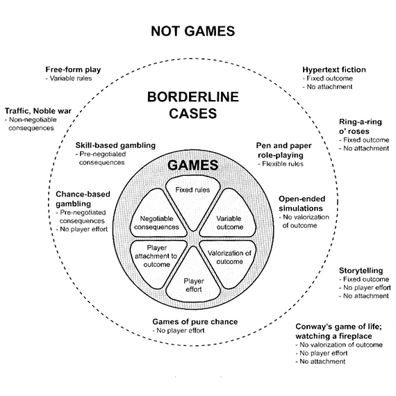

Video Game: History, Industry, Society, and Creativity
Week 2
Game Design Process I
(Rules and System Design)
Remember what is a game?
Jesper Juul's game model
Formal elements in a game
- Players
- Objective
- Procedures
- Rules
- Conflict
- Boundaries
- Outcome
(Fullerton, 2008, p.43)
Players
- How many?
- Any requirements?
- Special knowledge, roles, etc…?
Objective
- What is the objective of the game?
Procedures
- What are the required actions for play?
Rules
- Any limits on player actions?
- Rules regarding behavior?
Conflict
- What causes conflict in this game?
Boundaries
- What are the boundaries of this game?
- Are they physical? Conceptual?
Outcome
- What are the potential outcomes of the game?
Game mechanics
Discrete features of the formal aspects of the game.
"Game mechanics are constructs of rules intended to produce a game or gameplay. All games use mechanics; however, theories and styles differ as to their ultimate importance to the game. In general, the process and study of game design, or Ludology, are efforts to come up with game mechanics that allow for people playing a game to have an engaging, but not necessarily fun, experience."
The whole is greater than
the sum of its parts.
The game mechanics are interacting together to form a system and the gameplay rely game mechanics as a system.
*warning swear words*
A playcentric design process
Involve the player early on in the design process.
What to do?
- Set player experience goals.
- Prototype and playtest.
- Iterate.
1. Set player experience goals.
at a high level: it’s not “feature of the game, but rather descriptions of the interesting and unique situations in which you hope players will find themselves. For example, “players will have to cooperate to win, but the game will be structured so they never trust each other,” “players will feel a sense of happiness and playfulness rather than competitiveness” (Fullerton, 2008, p.11)
It is not the player's goal in the game.
2. Prototype and playtest.
Physical prototype of the core game mechanics
(using paper and pen, index card)


Yes. Paper prototype for video game design too.

3. Iterate.
Traditional waterfall software development process:
You can see how much it is similar to iterative design.
Procedures in a game
“… the methods of play and the actions that players can take to achieve the game objectives. One way to think about procedures is: Who does what, where, when, and how?
- Who can use the procedure?
One player? Some players? All the players? - What exactly does the player do?
- Where does the procedure occur?
Is the availability of the procedure limited by location? - When does it take place?
Is it limited by turn, time, or game state? - How do players access the procedure?
Directly by physical interaction?
Indirectly through a controller or input device?
By verbal command?”
(Fullerton, 2008, p.66)
Common types of procedures
- Starting action:
How to put a game into play. - Progression of action:
Ongoing procedures after the starting action - Special actions:
Available conditional to other elements or game state. - Resolving actions:
Bring gameplay to a close.
(Fullerton, 2008, p.66)